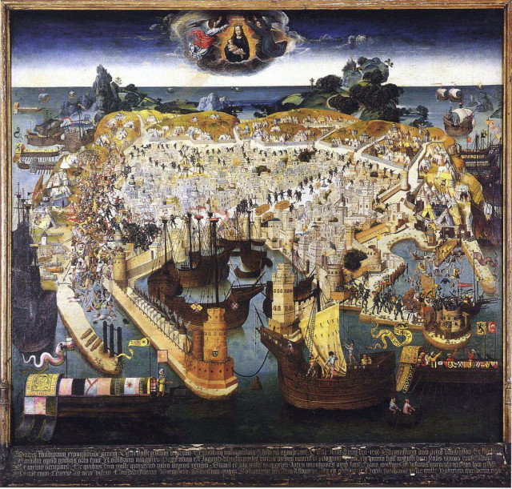
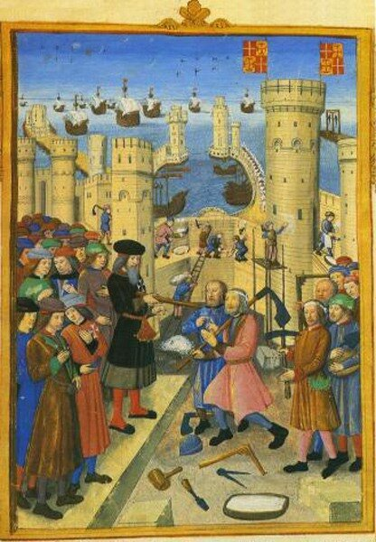
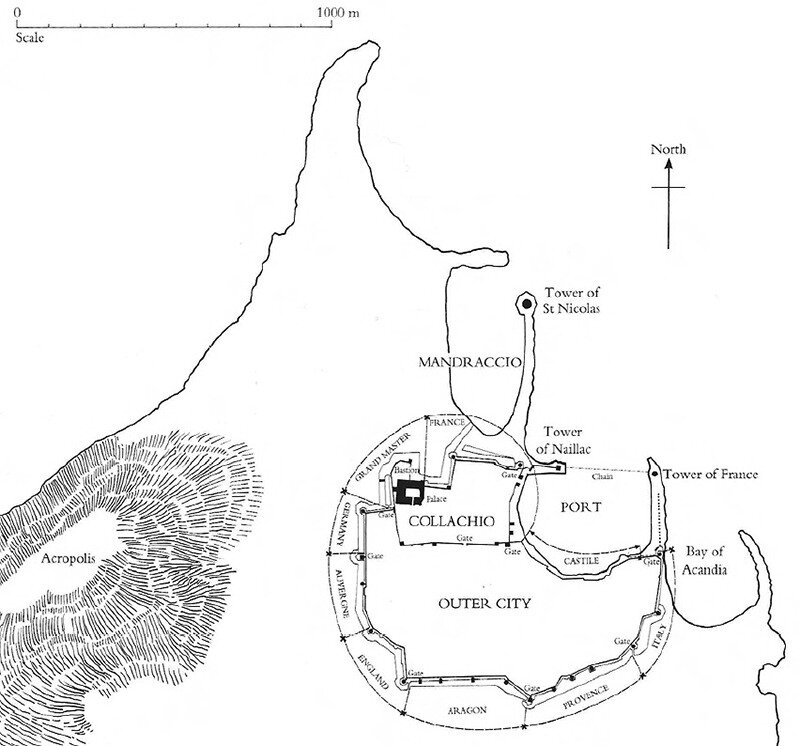
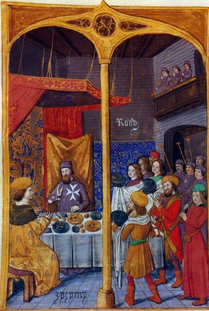
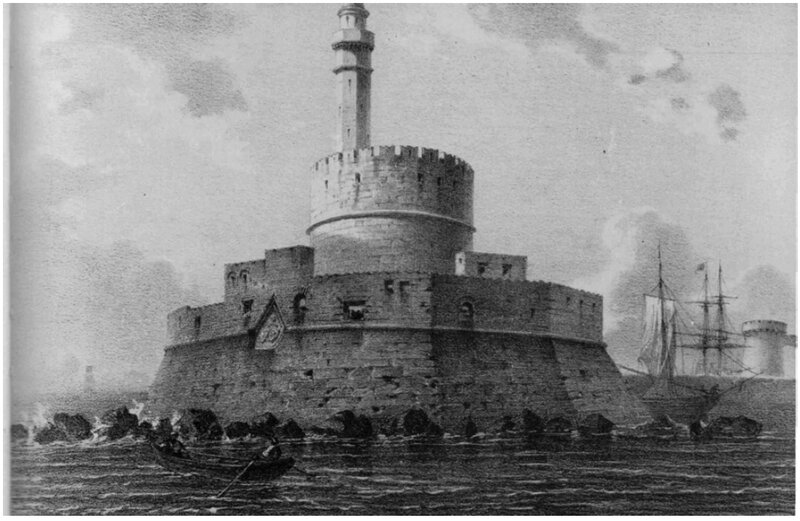
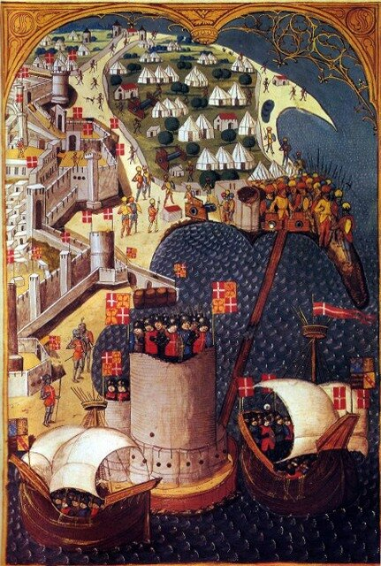
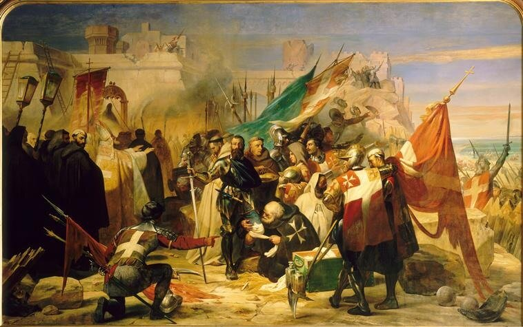

Arma virumque cano
(Битвы и мужа пою)
Вергилий «Энеида», кн. 1
Обратимся сейчас к короткому в масштабах Истории периоду в восемьдесят пять лет, в течение которого произошли три великие битвы и в веках были прославлены три великих воина-полководца и герои-рыцари ордена св. Иоанна Иерусалимского. Речь пойдет о трех осадах: двух осадах Родоса и осаде Мальты.
 |
| Осада Родоса Турками в 1480 г. (кликабельно) |
Мы не будем рассказывать о стремительном походе Тамерлана, разгромившего 25 июля 1402 года войска султана Баязида I Молниеносного в битве под Анкарой. История эта так интересна и наполнена столькими событиями, что краткий пересказ ее только испортит. Османам потребовалось почти полстолетия, чтобы восстановить свой султанат и его положение в Малой Азии. Но уже при Мехмеде II это было вновь сильное и агрессивное государство. В 1453 году под ударами турок-османов пал Константинополь, так и не дождавшийся помощи от генуэзцев, венецианцев, каталонцев и провансальцев, отправивших лишь чисто символически несколько кораблей. Тысячелетняя Византийская Империя прекратила свое существование.
25 января 1479 года был подписан мирный договор между Венецией и Османской Империей, положивший конец шестнадцатилетней войне. Приструнив самого сильного врага в Средиземноморье, османы обратили взор на остававшихся у них в тылу госпитальеров на Родосе. На острове понимали, что в вопросе о сроках начала турецкого наступления речь может идти лишь о нескольких месяцах. Боеспособное население Родоса не превышало по численности население небольшой деревни той поры. Непосредственно гарнизон крепости включал 600 рыцарей и сержантов, и от 1500 до 2000 солдат. Во главе гарнизона стоял пятидесятисемилетний Великий магистр (1476—1503) ордена госпитальеров Пьер д’Обюссон (Pierre d’Aubusson).Сразу же после своего избрания он энергично принялся готовить Родос к отражению ожидаемого штурма. Были отремонтированы и надстроены стены города, построены провиантские склады и склады для обмундирования.

Церкви за пределами крепости были срыты, чтобы не дать возможности туркам укрываться в их стенах при штурме. Были также вырублены все сады в окрестности, а полученная древесина перевезена в крепость. Наконец, 29 апреля был введен полный запрет на выход в море кораблей из гаваней острова.
План предусматривал распределение секторов обороны между восемью лангами: Франции, Германии, Оверни, Арагона, Англии, Прованса, Италии и Кастилии.

Великий магистр обратился к рыцарям ордена из европейских приоров с призывом прибыть на Родос для защиты своего опорного пункта в Эгейском море. Дожидаясь ответа, д'Обюссон не сидел без дела. Он принял решение покинуть некоторые укрепления на острове, в частности, храм на горе Phileremus, чтобы за счет их гарнизонов усилить оборону Родоса.
Не оставили без внимания и духовное обеспечение обороны. Из храма Phileremus в крепость был перенесен образ девы Марии. (В дальнейшем, при уходе с Родоса рыцари забрали этот образ с собой на Мальту, где он оставался до конца восемнадцатого века. Наполеоновские парни ободрали драгоценный оклад с образа, а сама икона в 1799 году, когда Великим магистром ордена стал Павел I, была передана в Россию.)
Предпринимались и дипломатические усилия по предотвращению начала войны. На исходе лета 1479 года Великий магистр принял Джема Султана, сына султана Мехмеда.

Эти переговоры отвечали интересам обеих сторон. Турки надеялись выиграть время для лучшей подготовки своего флота и армии, д'Обюссон – надеялся дождаться помощи с запада.
В мае 1480 года на северный берег Родоса высадилась турецкая армия численностью около 70 000 человек (средняя оценка). Ее обеспечил флот в составе 160 кораблей. На остров была доставлена также самая современная по тем временам тяжелая артиллерия, никогда еще до сих пор не использовавшаяся при осаде крепостей. Турецкий лагерь расположился на холме св. Стефана, где находился акрополь древнего Родоса.
Турецкий полководец – адмирал Меши-паша (греческий ренегат Мануил Палеолог, возглавлявший войско султана), обнаружив глубокий ров, защищавший стены города с юга и запада, решил штурмовать крепость с севера.
На этом направлении подступы к городским стенам защищала башня Св. Николая, воздвигнутая 25 лет назад. Ее изоляция от остальных укреплений создавала иллюзию возможности быстрого ее захвата и развития наступления на город.

Башня Св. Николая (минарет надстроен турками после захвата Родоса)
После тяжелого десятидневного обстрела к башне направилась эскадра галер, стремительно обошедших остров с севера.

Но Меши-паша явно недооценил укрепления башни Св. Николая. Губительный огонь защитников крепости вынудил турецкие войска отойти. В это же время со стороны госпитальеров была предпринята атака зажигательных судов – брандеров. Некоторые турецкие галеры загорелись, турецкий десант в тяжелых одеждах оказался в воде, около семисот утонувших стали первыми жертвами этого сражения.
Тогда турецкий командующий принял решение начать обстрел крепости с южного направления. Началась длительная бомбардировка, которая привела к серьезным разрушениям стен и внутренних построек крепости. Практически все хроникеры, освещавшие это сражение, в общем перечне серьезных разрушений отмечают, что одно из ядер попало через бойницу в келью Великого магистра и уничтожило хранившуюся там большую бочку с прекрасным вином. Видимо, вино играло немалую роль в поддержке сил осажденных госпитальеров. Не прекращалась бомбардировка и башни Св. Николая. В ночь накануне очередного штурма под покровом темноты были наведены понтоны. Однако защитники крепости с огневых позиций в секторах Великого магистра и французского ланга при свете горящих брандеров открыли огонь по турецким войскам, скопившимся на понтонах в ожидании сигнала к атаке. Потери турок были огромными. Потоплено было четыре галеры и несколько транспортных судов. Когда рассвело, сотни плавающих трупов перед крепостными стенами Родоса стали означали провал второй попытки штурмовать крепость. По сообщениям перебежчиков, турки потеряли в эту ночь 2500 человек.
Понесенные потери серьезно сократили шансы турецкой стороны на успешное продолжение осады. Тем не менее Меши-паша не отказался от своего замысла, правда, сменив тактику дальнейших действий. Направление основного удара было изменено. От атаки с моря турки отказались, перенеся свои усилия на сухопутные подступы к крепости госпитальеров. В течение шести недель велись бомбардировки Родоса и предпринимались попытки найти слабые места в его обороне. Наконец, Меши-паша посчитал, что наиболее слабым является восточный выступ крепости, укрепления которого стояли у самой кромки воды залива Акандия, что делало невозможным устройство защитного рва. Непрерывный обстрел бастионов итальянского и провансальского лангов продолжался до конца июля. В результате высота стен значительно уменьшилась. Расположенный за ними еврейский квартал был сметен с лица земли. Мирные жители скрывались от огня в пещерах и кельях, а также под защитой уцелевших стен. Город осыпался тысячами горящих стрел. Для тушения возникающих очагов пожаров были созданы специальные отряды. Для обеспечения штурма турки подносили к стенам камни, но труд этот оказался Сизифовым: защитники через прорытый под стеной туннель за ночь перетаскивали эти камин внутрь. 28 июля начался решительный штурм. Последующие аналитики оценивают численность наступающего турецкого войска 40 000 человек. Около 2 500 турок смогли подняться на стены крепости. В этот решающий момент небольшой отряд госпитальеров во главе с Великим магистром, который был к этому моменту уже ранен стрелой в бедро, по приставным лестницам поднялся на стену и по восточному проходу проник в тыл турецким воинам, сгрудившимся у западной кромки стены. Среди турок началась паника, они отступили к своему лагерю, преследуемые отрядами госпитальеров, которые буквально на плечах отступающих турок ворвались в их лагерь, разрушили его и в знак победы захватили знамя турецкого командующего.

Так близкая победа турок обернулась их полным поражением. Оценки турецких потерь составили до 9000 убитыми и 15000 ранеными. Меши-паша отвел свои войска с острова после восьмидесяти девяти дней осады.
Значение победы иоаннитов не ограничилось сохранением их присутствия на острове еще для одного поколения рыцарей. Был сорван план Мехмета ΙΙ по захвату Италии. Турецкие армии, уже захватившие к тому времени Отранто и разорившие селения Апулии, после поражения на Родосе вынуждены были покинуть Италию. Если бы Родос пал, колыбель латинской цивилизации могла бы постичь участь Византии.
Весной следующего 1481 года Мехмет ΙΙ умер. На своем надгробии он приказал написать, как наказ потомкам, следующие слова:
«Я намеревался захватить Родос и подчинить Италию»
Приведенные в тексте изображения частично взяты из иллюминированного манускрипта описания осады Родоса, которое сделал заместитель Великого канцлера ордена Гильом де Каорсин. Хотя Каорсин не являлся рыцарем Ордена Святого Иоанна, он в виде исключения был в 1459 г. назначен вице-канцлером Ордена и оставался на этой должности до самой смерти, последовавшей в 1503 г. Орден не раз поручал Каорсину сложные дипломатические миссии в различных странах Западной Европы. Он написал хронику осады Родоса турками в 1480 г. Obsidio Rhodia.